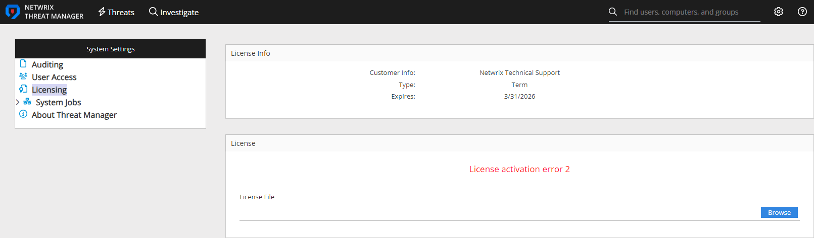

Symptom
After navigating to the Licensing page when attempting to update the license in Netwrix Threat Manager, you receive the following error:
License activation error 2.

Cause
There is a corruption in the existing license file.
Resolution
-
Stop all Netwrix Threat Manager services.
-
You can stop each one individually.
-
Alternatively, you can use the below PowerShell command to simultaneously stop them all:
Stop-Service -DisplayName "Netwrix Threat Manager*" -verbose
-
-
Delete the StealthDEFEND.lic file from Netwrix Threat Manager's data directory.
-
Depending on your deployment, it could be located in either of the following file paths:
-
C:\ProgramData\STEALTHbits\StealthDEFEND\LicenseService -
C:\ProgramData\Netwrix\Netwrix Threat Manager\LicenseService
-
-
-
Restart all Netwrix Threat Manager services.
-
You can restart each one individually.
-
Otherwise, you can use the following PowerShell command to simultaneously restart them all:
Start-Service -DisplayName "Netwrix Threat Manager*" -verbose
-
-
If you now see an error or red message that the license is not uploaded, navigate to the Netwrix Threat Manager Web Console and add the license again.
-
For assistance with applying the license, please refer to the Configuration Guide: Licensing Page.
-